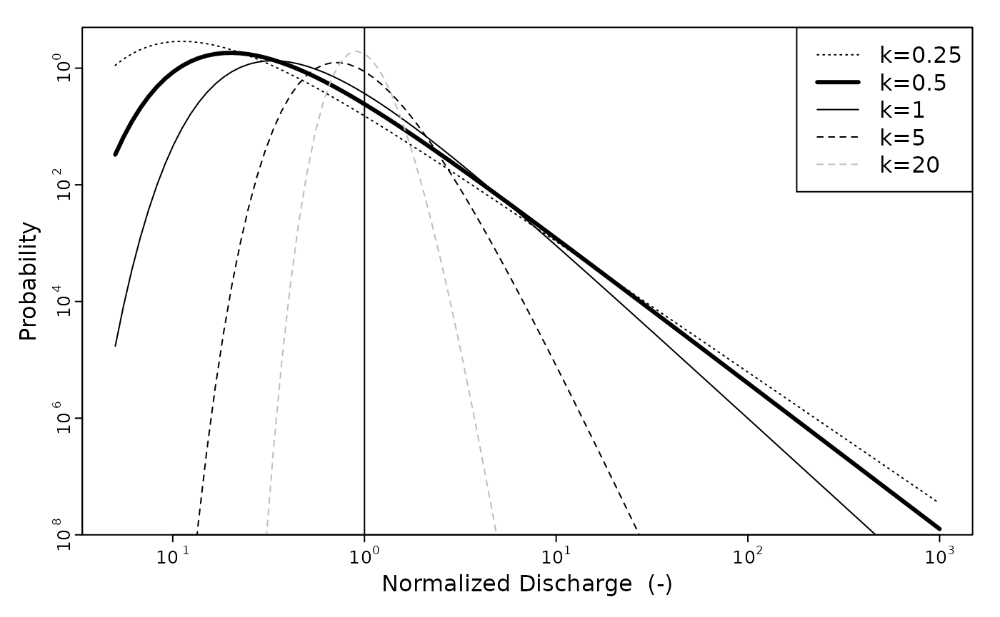
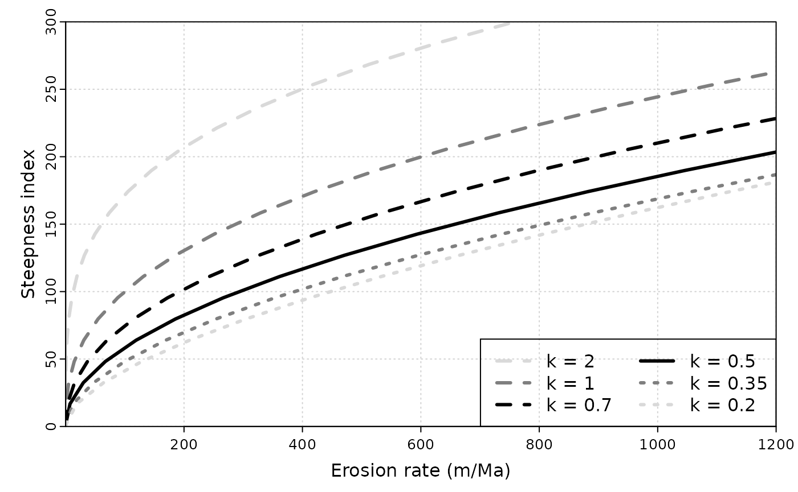
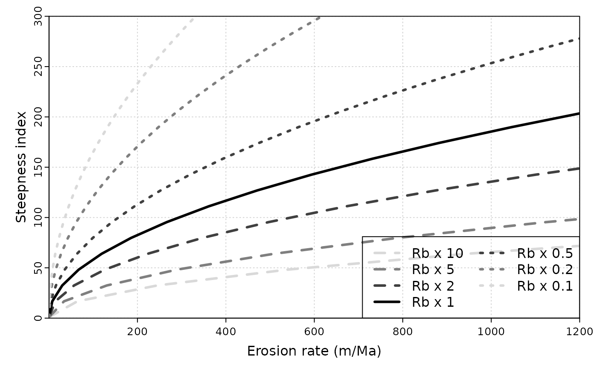

stochastic_incision_model.RmdWe load the gtbox package.
library("gtbox")The theoretical background for the incorporation of discharge probability distributions into rivr incision models have been extensively described in previous studies (Tucker and Bras (2000), Lague, Hovius, and Davy (2005), DiBiase and Whipple (2011), Scherler et al. (2017), Campforts et al. (2020)), and its main features will be presented briefly below.
In incision models taking into account discharge variability, the probability distribution of discharges is often modelled using an inverse gamma law, \[\begin{equation}\label{eq:inv_gamma} pdf(Q^*) = \frac{k^{k+1}}{\Gamma(k+1)} \exp(-\frac{k}{Q^*}) Q^{*-(k+2)}, \end{equation}\] where \(Q^* = Q/\bar{Q}\) is normalized discharge, \(k\) is the variability parameter, and \(\Gamma\) is the Gamma function. Low values of \(k\) correspond to situation where the discharge variability is high. The inverse gamma distribution combines exponential and power law parts describing low and high discharge regimes, respectively, and accounting for the low probabilities of events at both ends of the spectrum.
We plot below a few examples using the Inv_Gamma_dist function. In this case we considered normalized discharge, so \(\bar{Q} = 1\).
par(mar = c(3,3,1,1)) # margins size
Qs=10^seq(-1.3,3,length.out = 100) # vector of normalized discharge
plot(NA,log="xy",xlim=range(Qs),ylim=c(1e-8,5),yaxs="i",axes=F, xlab=NA, ylab=NA)
axis(side = 2,tcl=-0.25,mgp=c(1,0.25,0),cex.axis=0.8,at=10^c(-8,-6,-4,-2,0),labels=expression(10^-8,10^-6,10^-4,10^-2,10^0))
mtext(side = 2, line = 1.5, "Probability",cex=1)
axis(side = 1,tcl=-0.25,mgp=c(1,0.25,0),cex.axis=0.8,at=10^c(-1,0,1,2,3),labels=expression(10^-1,10^0,10^1,10^2,10^3))
mtext(side = 1, line = 1.25, "Normalized Discharge (-)",cex=1)
abline(v=1)
Ig = Inv_Gamma_dist(0.5,Qs,1)
lines(Qs,Ig,lwd=3)
Ig = Inv_Gamma_dist(1,Qs,1)
lines(Qs,Ig)
Ig = Inv_Gamma_dist(0.25,Qs,1)
lines(Qs,Ig,lty=3)
Ig = Inv_Gamma_dist(5,Qs,1)
lines(Qs,Ig,lty=2)
Ig = Inv_Gamma_dist(20,Qs,1)
lines(Qs,Ig,lty=2,col="grey")
legend("topright",c("k=0.25","k=0.5","k=1","k=5","k=20"),lty=c(3,1,1,2,2),lwd=c(1,3,1,1,1),col=c(rep("black",4),"grey"))
box()
The previous figure show the evolution of the shape of the inverse gamma distribution with the variability parameter k.
Instantaneous detachment-limited fluvial incision \(I\) can be expressed as a function of shear stress acting on the river bed \(\tau\), \[\begin{equation} \label{eq:inst_inc_1} I = k_e \left( \tau^a - \tau_c^a \right), \end{equation}\] where \(\tau_c\) is a threshold shear stress beyond which incision occurs, \(k_e\) is an erodibility coefficient depending on the properties of the bedrock, and \(a\) an exponent dependent on the nature of incision processes.
Shear stress \(\tau\) can be in turn expressed as a function of discharge \(Q\), slope \(S\) and channel width \(W\) as, \[\begin{equation}\label{eq:tau} \tau = k_t \left( \frac{Q}{W} \right)^\alpha S^\beta, \end{equation}\] with \(k_t\), \(\alpha\) and \(\beta\) parameters depending on the formulation used to express flow resistance. For example, \(\alpha=3/5\) and \(\beta=7/10\) when using Manning’s frictional relationship (Howard (1994)).
The variation of channel width \(W\) downstream and with instantaneous discharge \(Q\) can be computed according to, \[\begin{equation} \frac{W}{W_b} = \left( \frac{Q}{\bar{Q}} \right)^{\omega_s}, \end{equation}\] with \(\omega_s\) an empirical parameter and \(W_b\) the bankfull discharge, scaling with the mean annual discharge \(\bar{Q}\) as, \[\begin{equation}\label{eq:wb} W_b = k_w \bar{Q}^{\omega_b}, \end{equation}\] where \(k_w\) and \(\omega_b\) are another couple of empirical parameters, which can be determined from field measurements or remote sensing imagery Kirby and Ouimet (2011) DiBiase and Whipple (2011) Fisher et al. (2012).
Mean annual discharge \(\bar{Q}\) can be calculated from mean runoff \(\bar{R}\) and drainage area \(A\) as \(\bar{Q} = \bar{R}A^c\), with \(c\) an exponent that we will consider equal to 1 in the following.
Equations above can then be combined to yield an expression for instantaneous incision \(I\). \[\begin{equation}\label{eq:inst_inc_2} I = k_e k_t^a k_w^{-a\alpha}\bar{R}^{a\alpha(1 - \omega_b)} \left(\frac{Q}{\bar{Q}}\right)^{a\alpha(1-\omega_s)} A^{a\alpha(1-\omega_b)}S^{a\beta} - k_e\tau^a \end{equation}\]
This equation can be simplified by defining an area exponent \(m=a\alpha(1-\omega_b)\), a slope exponent \(n=a\beta\), an erodibility term \(K=k_e k_t k_w^{-a\alpha}\bar{R}^m\), \(\gamma = a\alpha(1-\omega_s)\) and a threshold term \(\Psi=k_e\tau^a\), which yields, \[\begin{equation}\label{eq:inst_inc_3} I= K \left(\frac{Q}{\bar{Q}}\right)^\gamma A^m S^n - \Psi \end{equation}\] This relationship highlight the importance of the parameter \(\gamma\) in controlling the sensitivity of incision to discharge and its variability (Lague, Hovius, and Davy (2005)).
Introducing the steepness index \(k_s = A S^{m/n}\) (Kirby and Whipple (2012)), the previous equation can also be written as, \[\begin{equation}\label{eq:inst_inc_3_ksn}
I= K \left(\frac{Q}{\bar{Q}}\right)^\gamma k_s^n - \Psi
\end{equation}\] which can be computed with function I_instantaneous.
If we assume that the threshold term \(\Psi\) is negligible and that discharge \(Q\) is constant and equal to mean discharge \(\bar{Q}\), we can simplify to the classical stream power form, \[\begin{equation}\label{eq:inst_inc_cst_q} I= K A^m S^n \end{equation}\]
Long term incision \(E\) can be calculated by weighting instantaneous incision by discharge probability \(pdf(Q)\) and integrating over \(Q\) . \[\begin{equation}\label{eq:long_inc}
E = \int_{Q_c}^{Q_m} I(Q,k_s) pdf(Q) dQ,
\end{equation}\] where \(Q_c\) is the critical discharge needed to overcome the incision threshold and \(Q_m\) is the maximum discharge. \(Q_c\) is obtained by setting \(I=0\) in the instantaneous incision equation, \[\begin{equation}\label{eq:qc}
Q_c = \bar{Q} \left( \frac{\Psi}{K} \right)^{\frac{1}{\gamma}} k_s^{-\frac{n}{\gamma}},
\end{equation}\]
and is calculated by function Qcritical.
We can now compute the predicted long-term incision rate \(E\) for a given channel steepness and a value o the variability parameters \(k\).
We use the same parameters as DiBiase and Whipple (2011), which are defined below.
# Table 2 from DiBiase and Whipple (2011)
ke = 4.3e-12 # erodibility parameter
tauc = 45 # critical shear stress (Pa)
kq = 9e-9 # !!! not used?
kw = 15 # empirical constant for downstream variation in channel width (equation 4a)
kt = 1000 # equation 3
omegas = 0.25 # empirical exponent for at-a-station variation in channel width (equation 4b)
omegab = 0.55 # empirical exponent for downstream variation in channel width (equation 4a)
a = 3/2 # equation 2 shear stress exponent
alpha = 2/3 # equation 3
beta = 2/3 # equation 3
c = 1 # equation 6
Rb = 0.28/(365*24*3600) # mean daily run off (m/s) (equation 6)
# derived parameters for equation 7
m = alpha*a*(1-omegab)
n = beta*a
# derived parameters for equation 8
K = ke*kt^a*kw^(-1*alpha*a)*Rb^m
gamma = alpha*a*(1-omegas)
Psi = ke*tauc^aThe calculation is done by the I_long_term function.
# plot definition
par(mar = c(3,3,1,1)) # margins size
plot(NA,xlim=c(0.1,1200),ylim=c(0,300),yaxs="i",xaxs="i",axes=F, xlab=NA, ylab=NA)
axis(side = 1,tcl=-0.25,mgp=c(1,0.25,0),cex.axis=0.8)
mtext(side = 1, line = 1.5, "Erosion rate (m/Ma)",cex=1)
axis(side = 2,tcl=-0.25,mgp=c(1,0.25,0),cex.axis=0.8)
mtext(side = 2, line = 1.25, "Steepness index",cex=1)
grid()
#
ks = seq(1,300,length.out = 20) # define the values of ks for which we wnat to compute.
df = data.frame(k=c(2,1,0.7,0.5,0.35,0.2),lty=c(2,2,2,1,3,3),col=c("grey85","grey50","black","black","grey50","grey85"))
df$leg = paste("k =",df$k)
#
for (i in 1:nrow(df)){
E = I_long_term(df$k[i],ks,Psi,K,n,gamma)*(365*24*3600)*1e6
lines(E,ks,lty=df$lty[i],lwd=3,col=as.character(df$col[i]))
}
#
box()
legend("bottomright",df$leg,lty=df$lty,lwd=3,col=as.character(df$col),ncol=2)
This is basically figure 7b from DiBiase and Whipple (2011). We can also try to change run off \(R_b\).
# plot definition
par(mar = c(3,3,1,1)) # margins size
plot(NA,xlim=c(0.1,1200),ylim=c(0,300),yaxs="i",xaxs="i",axes=F, xlab=NA, ylab=NA)
axis(side = 1,tcl=-0.25,mgp=c(1,0.25,0),cex.axis=0.8)
mtext(side = 1, line = 1.5, "Erosion rate (m/Ma)",cex=1)
axis(side = 2,tcl=-0.25,mgp=c(1,0.25,0),cex.axis=0.8)
mtext(side = 2, line = 1.25, "Steepness index",cex=1)
grid()
#
k = 0.5
ks = seq(1,300,length.out = 20) # define the values of ks for which we want to compute.
df = data.frame(Rb=c(10,5,2,1,0.5,0.2,0.1),lty=c(2,2,2,1,3,3,3),col=c("grey85","grey50","grey25","black","grey25","grey50","grey85"))
df$leg = paste("Rb x",df$Rb)
#
for (i in 1:nrow(df)){
K = ke*kt^a*kw^(-1*alpha*a)*(df$Rb[i]*Rb)^m
E = I_long_term(k,ks,Psi,K,n,gamma)*(365*24*3600)*1e6
lines(E,ks,lty=df$lty[i],lwd=3,col=as.character(df$col[i]))
}
#
box()
legend("bottomright",df$leg,lty=df$lty,lwd=3,col=as.character(df$col),ncol=2)
Campforts, Benjamin, Veerle Vanacker, Frédéric Herman, Matthias Vanmaercke, Wolfgang Schwanghart, Gustavo E. Tenorio, Patrick Willems, and Gerard Govers. 2020. “Parameterization of River Incision Models Requires Accounting for Environmental Heterogeneity: Insights from the Tropical Andes.” Earth Surface Dynamics 8 (2): 447–70. https://doi.org/10/gjq4mv.
DiBiase, Roman A., and Kelin X. Whipple. 2011. “The Influence of Erosion Thresholds and Runoff Variability on the Relationships Among Topography, Climate, and Erosion Rate.” Journal of Geophysical Research 116 (F4): F04036. https://doi.org/10/cnkkht.
Fisher, G Burch, Colin B Amos, Bodo Bookhagen, Douglas W Burbank, and Vincent Godard. 2012. “Channel Widths, Landslides, Faults, and Beyond: The New World Order of High-Spatial Resolution Google Earth Imagery in the Study of Earth Surface Processes.” Geological Society of America Special Papers 492: 1–22.
Howard, Alan D. 1994. “A Detachment-Limited Model of Drainage Basin Evolution.” Water Resources Research 30 (7): 2261–85. https://doi.org/10/fcwv88.
Kirby, E., and W. Ouimet. 2011. “Tectonic Geomorphology Along the Eastern Margin of Tibet: Insights into the Pattern and Processes of Active Deformation Adjacent to the Sichuan Basin.” Geological Society, London, Special Publications 353 (1): 165–88. https://doi.org/10/fvr6td.
Kirby, Eric, and Kelin X. Whipple. 2012. “Expression of Active Tectonics in Erosional Landscapes.” Journal of Structural Geology 44: 54–75. https://doi.org/10/f4gm5d.
Lague, Dimitri, N. Hovius, and P. Davy. 2005. “Discharge, Discharge Variability, and the Bedrock Channel Profile.” Journal of Geophysical Research 110 (F4): F04006. https://doi.org/10/bq8zjr.
Scherler, Dirk, Roman A. DiBiase, G. Burch Fisher, and Jean-Philippe Avouac. 2017. “Testing Monsoonal Controls on Bedrock River Incision in the Himalaya and Eastern Tibet with a Stochastic-Threshold Stream Power Model.” Journal of Geophysical Research: Earth Surface 122 (7): 1389–1429. https://doi.org/10/gbsv9h.
Tucker, Gregory E., and Rafael L. Bras. 2000. “A Stochastic Approach to Modeling the Role of Rainfall Variability in Drainage Basin Evolution.” Water Resources Research 36 (7): 1953–64. https://doi.org/10/frn29p.